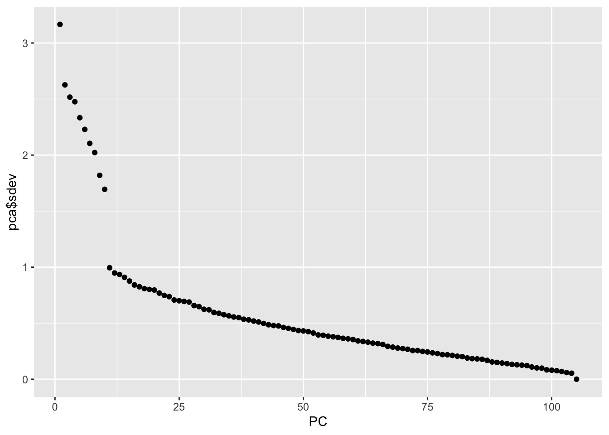
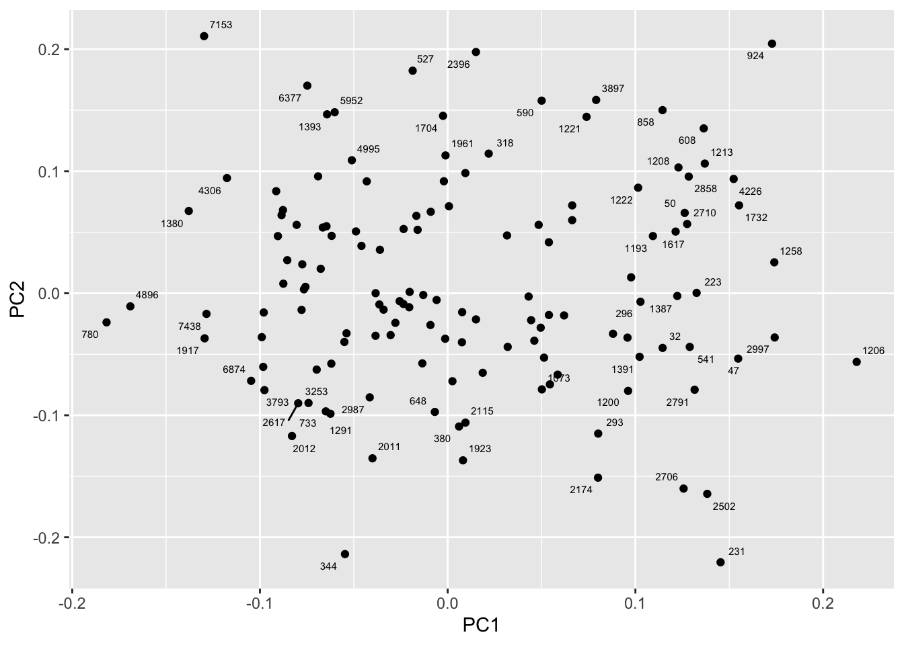

y <- select(movielens, movieId, userId, rating) |>
pivot_wider(names_from = movieId, values_from = rating) |>
column_to_rownames("userId") |>
as.matrix()
movie_map <- movielens |> select(movieId, title) |> distinct(movieId, .keep_all = TRUE)
lambda <- 3.1
mu <- mean(y, na.rm = TRUE)
n <- colSums(!is.na(y))
b_i_reg <- colSums(y - mu, na.rm = TRUE) / (n + lambda)
b_u <- rowMeans(sweep(y - mu, 2, b_i_reg), na.rm = TRUE)
r <- sweep(y - mu, 2, b_i_reg) - b_u
colnames(r) <- with(movie_map, title[match(colnames(r), movieId)])30 Matrix factorization
Matrix factorization is a widely used concept in machine learning. It is very much related to factor analysis, singular value decomposition (SVD), and principal component analysis (PCA). Here we describe the concept in the context of movie recommendation systems.
We have described how the model:
\[ Y_{u,i} = \mu + b_i + b_u + \varepsilon_{u,i} \]
accounts for movie to movie differences through the \(b_i\) and user to user differences through the \(b_u\). But this model leaves out an important source of variation related to the fact that groups of movies have similar rating patterns and groups of users have similar rating patterns as well. We will discover these patterns by studying the residuals:
\[ r_{u,i} = y_{u,i} - \hat{b}_i - \hat{b}_u \]
We can compute these residuals for the model we fit in the previous chapter:
If the movie and user effect model explains all the signal, and the \(\varepsilon\) are just noise, then the residuals for different movies should be independent from each other. But they are not. Here are some examples:

This plot says that users that liked The Godfather more than what the model expects them to, based on the movie and user effects, also liked The Godfather II more than expected. A similar relationship is seen when comparing The Godfather and Goodfellas. Although not as strong, there is still correlation. We see correlations between You’ve Got Mail and Sleepless in Seattle as well
By looking at the correlation between movies, we can see a pattern (we rename the columns to save print space):
Godfather Godfather2 Goodfellas You've Got Sleepless
Godfather 1.0000000 0.8326000 0.4583390 -0.3445887 -0.3254261
Godfather2 0.8326000 1.0000000 0.6262675 -0.2971988 -0.3104670
Goodfellas 0.4583390 0.6262675 1.0000000 -0.2969603 -0.3904577
You've Got -0.3445887 -0.2971988 -0.2969603 1.0000000 0.5306141
Sleepless -0.3254261 -0.3104670 -0.3904577 0.5306141 1.0000000There seems to be people that like romantic comedies more than expected, while others that like gangster movies more than expected.
These results tell us that there is structure in the data. But how can we model this?
30.1 Factor analysis
Here is an illustration, using a simulation, of how we can use some structure to predict the \(r_{u,i}\). Suppose our residuals r look like this:
round(r, 1) Godfather Godfather2 Goodfellas You've Got Sleepless
1 2.1 2.5 2.4 -1.6 -1.7
2 1.9 1.4 2.0 -1.8 -1.3
3 1.8 2.7 2.3 -2.7 -2.0
4 -0.5 0.7 0.6 -0.8 -0.5
5 -0.6 -0.8 0.6 0.4 0.6
6 -0.1 0.2 0.5 -0.7 0.4
7 -0.3 -0.1 -0.4 -0.4 0.7
8 0.3 0.4 0.3 0.0 0.7
9 -1.4 -2.2 -1.5 2.0 2.8
10 -2.6 -1.5 -1.3 1.6 1.3
11 -1.5 -2.0 -2.2 1.7 2.7
12 -1.5 -1.4 -2.3 2.5 2.0There seems to be a pattern here. In fact, we can see very strong correlation patterns:
cor(r) Godfather Godfather2 Goodfellas You've Got Sleepless
Godfather 1.0000000 0.9227480 0.9112020 -0.8976893 -0.8634538
Godfather2 0.9227480 1.0000000 0.9370237 -0.9498184 -0.9685434
Goodfellas 0.9112020 0.9370237 1.0000000 -0.9489823 -0.9557691
You've Got -0.8976893 -0.9498184 -0.9489823 1.0000000 0.9448660
Sleepless -0.8634538 -0.9685434 -0.9557691 0.9448660 1.0000000We can create vectors q and p, that can explain much of the structure we see. The q would look like this:
t(q) Godfather Godfather2 Goodfellas You've Got Sleepless
[1,] 1 1 1 -1 -1and it narrows down movies to two groups: gangster (coded with 1) and romance (coded with -1). We can also reduce the users to three groups:
t(p) 1 2 3 4 5 6 7 8 9 10 11 12
[1,] 2 2 2 0 0 0 0 0 -2 -2 -2 -2those that like gangster movies and dislike romance movies (coded as 2), those that like romance movies and dislike gangster movies (coded as -2), and those that don’t care (coded as 0). The main point here is that we can almost reconstruct \(r\), which has 60 values, with a couple of vectors totaling 17 values. Note that p and q are equivalent to the patterns and weights we described in Section Section 27.5.
If \(r\) contains the residuals for users \(u=1,\dots,12\) for movies \(i=1,\dots,5\) we can write the following mathematical formula for our residuals \(r_{u,i}\).
\[ r_{u,i} \approx p_u q_i \]
This implies that we can explain more variability by modifying our previous model for movie recommendations to:
\[ Y_{u,i} = \mu + b_i + b_u + p_u q_i + \varepsilon_{u,i} \]
However, we motivated the need for the \(p_u q_i\) term with a simple simulation. The structure found in data is usually more complex. For example, in this first simulation we assumed there were was just one factor \(p_u\) that determined which of the two genres movie \(u\) belongs to. But the structure in our movie data seems to be much more complicated than gangster movie versus romance. We may have many other factors. Here we present a slightly more complex simulation. We now add a sixth movie, Scent of Woman.
round(r, 1) Godfather Godfather2 Goodfellas You've Got Sleepless Scent
1 0.0 0.3 2.2 0.2 0.1 -2.3
2 2.0 1.7 0.0 -1.9 -1.7 0.3
3 1.9 2.4 0.1 -2.3 -2.0 0.0
4 -0.3 0.3 0.3 -0.4 -0.3 0.3
5 -0.3 -0.4 0.3 0.2 0.3 -0.3
6 0.9 1.1 -0.8 -1.3 -0.8 1.2
7 0.9 1.0 -1.2 -1.2 -0.7 0.7
8 1.2 1.2 -0.9 -1.0 -0.6 0.8
9 -0.7 -1.1 -0.8 1.0 1.4 0.7
10 -2.3 -1.8 0.3 1.8 1.7 -0.1
11 -1.7 -2.0 -0.1 1.9 2.3 0.2
12 -1.8 -1.7 -0.1 2.3 2.0 0.4By exploring the correlation structure of this new dataset
Godfather Godfather2 Goodfellas YGM SS
Godfather 1.0000000 0.97596928 -0.17481747 -0.9729297 -0.95881628
Godfather2 0.9759693 1.00000000 -0.10510523 -0.9863528 -0.99025965
Goodfellas -0.1748175 -0.10510523 1.00000000 0.1798809 0.08007665
YGM -0.9729297 -0.98635285 0.17988093 1.0000000 0.98675100
SS -0.9588163 -0.99025965 0.08007665 0.9867510 1.00000000
SW 0.1298518 0.08758531 -0.94263256 -0.1632361 -0.08174489
SW
Godfather 0.12985181
Godfather2 0.08758531
Goodfellas -0.94263256
YGM -0.16323610
SS -0.08174489
SW 1.00000000we note that perhaps we need a second factor to account for the fact that some users like Al Pacino, while others dislike him or don’t care. Notice that the overall structure of the correlation obtained from the simulated data is not that far off the real correlation:
Godfather Godfather2 Goodfellas YGM SS SW
Godfather 1.0000000 0.8326000 0.45833896 -0.3445887 -0.3254261 0.15250174
Godfather2 0.8326000 1.0000000 0.62626754 -0.2971988 -0.3104670 0.21003950
Goodfellas 0.4583390 0.6262675 1.00000000 -0.2969603 -0.3904577 -0.07988783
YGM -0.3445887 -0.2971988 -0.29696030 1.0000000 0.5306141 -0.21887238
SS -0.3254261 -0.3104670 -0.39045775 0.5306141 1.0000000 -0.25664758
SW 0.1525017 0.2100395 -0.07988783 -0.2188724 -0.2566476 1.00000000To explain this more complicated structure, we need two factors. For example something like this:
t(q) Godfather Godfather2 Goodfellas You've Got Sleepless Scent
[1,] 1 1 1 -1 -1 -1
[2,] 1 1 -1 -1 -1 1With the first factor (the first column of q) used to code the gangster versus romance groups and a second factor (the second column of q) to explain the Al Pacino versus no Al Pacino groups. We will also need two sets of coefficients to explain the variability introduced by the \(3\times 3\) types of groups:
t(p) 1 2 3 4 5 6 7 8 9 10 11 12
[1,] 1 1 1 0 0 0 0 0 -1 -1 -1 -1
[2,] -1 1 1 0 0 1 1 1 0 -1 -1 -1The model with two factors has 36 parameters that can be used to explain much of the variability in the 72 ratings:
\[ Y_{u,i} = \mu + b_i + b_u + p_{u,1} q_{1,i} + p_{u,2} q_{2,i} + \varepsilon_{u,i} \]
Note that in an actual data application, we need to fit this model to data. To explain the complex correlation we observe in real data, we usually permit the entries of \(p\) and \(q\) to be continuous values, rather than discrete ones as we used in the simulation. For example, rather than dividing movies into gangster or romance, we define a continuum. Also note that this is not a linear model and to fit it we need to use an algorithm other than the one used by lm to find the parameters that minimize the least squares. The winning algorithms for the Netflix challenge fit a model similar to the above and used regularization to penalize for large values of \(p\) and \(q\), rather than using least squares. Implementing this approach is beyond the scope of this book.
30.2 Connection to SVD and PCA
The decomposition:
\[ r_{u,i} \approx p_{u,1} q_{1,i} + p_{u,2} q_{2,i} \]
is very much related to SVD and PCA. SVD and PCA are complicated concepts, but one way to understand them is that SVD is an algorithm that finds the vectors \(p\) and \(q\) that permit us to rewrite the matrix \(\mbox{r}\) with \(m\) rows and \(n\) columns as:
\[ r_{u,i} = p_{u,1} q_{1,i} + p_{u,2} q_{2,i} + \dots + p_{u,n} q_{n,i} \]
with the variability of each term decreasing and with the \(p\)s uncorrelated. The algorithm also computes this variability so that we can know how much of the matrices, total variability is explained as we add new terms. This may permit us to see that, with just a few terms, we can explain most of the variability. To illustrate this we will only consider a small subset of movies with many ratings and users that have rated many movies:
library(missMDA)
ind_x <- rowSums(!is.na(r)) >= 250
ind_y <- colSums(!is.na(r[ind_x,])) >= 50 #| colnames(r) %in% keep
y <- y[ind_x, ind_y]
lambda <- 3.1
mu <- mean(y, na.rm = TRUE)
n <- colSums(!is.na(y))
b_i_reg <- colSums(y - mu, na.rm = TRUE) / (n + lambda)
b_u <- rowMeans(sweep(y - mu, 2, b_i_reg), na.rm = TRUE)
r <- sweep(y - mu, 2, b_i_reg) - b_u
colnames(r) <- with(movie_map, title[match(colnames(r), movieId)])
impute <- imputePCA(r, ncp = 10)
pca <- prcomp(impute$completeObs)The \(q\) vectors are called the principal components and they are stored in this matrix:
dim(pca$rotation)[1] 136 105While the \(p\), or the user effects, are here:
dim(pca$x)[1] 105 105We can see the variability of each of the vectors:
qplot(1:nrow(pca$x), pca$sdev, xlab = "PC")Warning: `qplot()` was deprecated in ggplot2 3.4.0.
We also notice that the first two principal components are related to the structure in opinions about movies:

Just by looking at the top 10 in each direction, we see a meaningful patterns. The first PC shows the difference between Hollywood blockbusters on one side:
[1] "780" "4896" "1380" "7153" "1917" "7438" "4306" "6874" "586" "736" and critically acclaimed movies on the other:
[1] "1206" "2997" "1258" "924" "1732" "47" "4226" "231" "2502" "1213"While the second PC seems to be related to nerd favorites or violent movies on one side
[1] "231" "344" "2502" "2706" "2174" "1923" "2011" "2012" "293" "380" and romantic movies on the other:
[1] "7153" "924" "2396" "527" "6377" "3897" "590" "858" "5952" "1393"Fitting a model that incorporates these estimates is complicated. For those interested in implementing an approach that incorporates these ideas, we recommend trying the recommenderlab package. The details are beyond the scope of this book.
30.3 Exercises
In this exercise set, we will be covering a topic useful for understanding matrix factorization: the singular value decomposition (SVD). SVD is a mathematical result that is widely used in machine learning, both in practice and to understand the mathematical properties of some algorithms. This is a rather advanced topic and to complete this exercise set you will have to be familiar with linear algebra concepts such as matrix multiplication, orthogonal matrices, and diagonal matrices.
The SVD tells us that we can decompose an \(N\times p\) matrix \(Y\) with \(p < N\) as
\[ Y = U D V^{\top} \]
With \(U\) and \(V\) orthogonal of dimensions \(N\times p\) and \(p\times p\), respectively, and \(D\) a \(p \times p\) diagonal matrix with the values of the diagonal decreasing:
\[d_{1,1} \geq d_{2,2} \geq \dots d_{p,p}.\]
In this exercise, we will see one of the ways that this decomposition can be useful. To do this, we will construct a dataset that represents grade scores for 100 students in 24 different subjects. The overall average has been removed so this data represents the percentage point each student received above or below the average test score. So a 0 represents an average grade (C), a 25 is a high grade (A+), and a -25 represents a low grade (F). You can simulate the data like this:
set.seed(1987)
n <- 100
k <- 8
Sigma <- 64 * matrix(c(1, .75, .5, .75, 1, .5, .5, .5, 1), 3, 3)
m <- MASS::mvrnorm(n, rep(0, 3), Sigma)
m <- m[order(rowMeans(m), decreasing = TRUE),]
y <- m %x% matrix(rep(1, k), nrow = 1) +
matrix(rnorm(matrix(n * k * 3)), n, k * 3)
colnames(y) <- c(paste(rep("Math",k), 1:k, sep="_"),
paste(rep("Science",k), 1:k, sep="_"),
paste(rep("Arts",k), 1:k, sep="_"))Our goal is to describe the student performances as succinctly as possible. For example, we want to know if these test results are all just random independent numbers. Are all students just about as good? Does being good in one subject imply you will be good in another? How does the SVD help with all this? We will go step by step to show that with just three relatively small pairs of vectors we can explain much of the variability in this \(100 \times 24\) dataset.
You can visualize the 24 test scores for the 100 students by plotting an image:
my_image <- function(x, zlim = range(x), ...){
colors = rev(RColorBrewer::brewer.pal(9, "RdBu"))
cols <- 1:ncol(x)
rows <- 1:nrow(x)
image(cols, rows, t(x[rev(rows),,drop=FALSE]), xaxt = "n", yaxt = "n",
xlab="", ylab="", col = colors, zlim = zlim, ...)
abline(h=rows + 0.5, v = cols + 0.5)
axis(side = 1, cols, colnames(x), las = 2)
}
my_image(y)1. How would you describe the data based on this figure?
- The test scores are all independent of each other.
- The students that test well are at the top of the image and there seem to be three groupings by subject.
- The students that are good at math are not good at science.
- The students that are good at math are not good at humanities.
2. You can examine the correlation between the test scores directly like this:
my_image(cor(y), zlim = c(-1,1))
range(cor(y))
axis(side = 2, 1:ncol(y), rev(colnames(y)), las = 2)Which of the following best describes what you see?
- The test scores are independent.
- Math and science are highly correlated but the humanities are not.
- There is high correlation between tests in the same subject but no correlation across subjects.
- There is a correlation among all tests, but higher if the tests are in science and math and even higher within each subject.
3. Remember that orthogonality means that \(U^{\top}U\) and \(V^{\top}V\) are equal to the identity matrix. This implies that we can also rewrite the decomposition as
\[ Y V = U D \mbox{ or } U^{\top}Y = D V^{\top}\]
We can think of \(YV\) and \(U^{\top}V\) as two transformations of Y that preserve the total variability of \(Y\) since \(U\) and \(V\) are orthogonal.
Use the function svd to compute the SVD of y. This function will return \(U\), \(V\) and the diagonal entries of \(D\).
s <- svd(y)
names(s)You can check that the SVD works by typing:
y_svd <- s$u %*% diag(s$d) %*% t(s$v)
max(abs(y - y_svd))Compute the sum of squares of the columns of \(Y\) and store them in ss_y. Then compute the sum of squares of columns of the transformed \(YV\) and store them in ss_yv. Confirm that sum(ss_y) is equal to sum(ss_yv).
4. We see that the total sum of squares is preserved. This is because \(V\) is orthogonal. Now to start understanding how \(YV\) is useful, plot ss_y against the column number and then do the same for ss_yv. What do you observe?
5. We see that the variability of the columns of \(YV\) is decreasing. Furthermore, we see that, relative to the first three, the variability of the columns beyond the third is almost 0. Now notice that we didn’t have to compute ss_yv because we already have the answer. How? Remember that \(YV = UD\) and because \(U\) is orthogonal, we know that the sum of squares of the columns of \(UD\) are the diagonal entries of \(D\) squared. Confirm this by plotting the square root of ss_yv versus the diagonal entries of \(D\).
6. From the above we know that the sum of squares of the columns of \(Y\) (the total sum of squares) add up to the sum of s$d^2 and that the transformation \(YV\) gives us columns with sums of squares equal to s$d^2. Now compute what percent of the total variability is explained by just the first three columns of \(YV\).
7. We see that almost 99% of the variability is explained by the first three columns of \(YV = UD\). So we get the sense that we should be able to explain much of the variability and structure we found while exploring the data with a few columns. Before we continue, let’s show a useful computational trick to avoid creating the matrix diag(s$d). To motivate this, we note that if we write \(U\) out in its columns \([U_1, U_2, \dots, U_p]\) then \(UD\) is equal to
\[UD = [U_1 d_{1,1}, U_2 d_{2,2}, \dots, U_p d_{p,p}]\]
Use the sweep function to compute \(UD\) without constructing diag(s$d) nor matrix multiplication.
8. We know that \(U_1 d_{1,1}\), the first column of \(UD\), has the most variability of all the columns of \(UD\). Earlier we saw an image of \(Y\):
my_image(y)in which we can see that the student to student variability is quite large and that it appears that students that are good in one subject are good in all. This implies that the average (across all subjects) for each student should explain a lot of the variability. Compute the average score for each student and plot it against \(U_1 d_{1,1}\) and describe what you find.
9. We note that the signs in SVD are arbitrary because:
\[ U D V^{\top} = (-U) D (-V)^{\top} \]
With this in mind we see that the first column of \(UD\) is almost identical to the average score for each student except for the sign.
This implies that multiplying \(Y\) by the first column of \(V\) must be performing a similar operation to taking the average. Make an image plot of \(V\) and describe the first column relative to others and how this relates to taking an average.
10. We already saw that we can rewrite \(UD\) as
\[U_1 d_{1,1} + U_2 d_{2,2} + \dots + U_p d_{p,p}\]
with \(U_j\) the j-th column of \(U\). This implies that we can rewrite the entire SVD as:
\[Y = U_1 d_{1,1} V_1 ^{\top} + U_2 d_{2,2} V_2 ^{\top} + \dots + U_p d_{p,p} V_p ^{\top}\]
with \(V_j\) the jth column of \(V\). Plot \(U_1\), then plot \(V_1^{\top}\) using the same range for the y-axis limits, then make an image of \(U_1 d_{1,1} V_1 ^{\top}\) and compare it to the image of \(Y\). Hint: use the my_image function defined above and use the drop=FALSE argument to assure the subsets of matrices are matrices.
11. We see that with just a vector of length 100, a scalar, and a vector of length 24, we actually come close to reconstructing the original \(100 \times 24\) matrix. This is our first matrix factorization:
\[ Y \approx d_{1,1} U_1 V_1^{\top}\] We know it explains s$d[1]^2/sum(s$d^2) * 100 percent of the total variability. Our approximation only explains the observation that good students tend to be good in all subjects. But another aspect of the original data that our approximation does not explain was the higher similarity we observed within subjects. We can see this by computing the difference between our approximation and original data and then computing the correlations. You can see this by running this code:
resid <- y - with(s,(u[,1, drop=FALSE]*d[1]) %*% t(v[,1, drop=FALSE]))
my_image(cor(resid), zlim = c(-1,1))
axis(side = 2, 1:ncol(y), rev(colnames(y)), las = 2)Now that we have removed the overall student effect, the correlation plot reveals that we have not yet explained the within subject correlation nor the fact that math and science are closer to each other than to the arts. So let’s explore the second column of the SVD. Repeat the previous exercise but for the second column: Plot \(U_2\), then plot \(V_2^{\top}\) using the same range for the y-axis limits, then make an image of \(U_2 d_{2,2} V_2 ^{\top}\) and compare it to the image of resid.
12. The second column clearly relates to a student’s difference in ability in math/science versus the arts. We can see this most clearly from the plot of s$v[,2]. Adding the matrix we obtain with these two columns will help with our approximation:
\[ Y \approx d_{1,1} U_1 V_1^{\top} + d_{2,2} U_2 V_2^{\top} \]
We know it will explain
sum(s$d[1:2]^2)/sum(s$d^2) * 100percent of the total variability. We can compute new residuals like this:
resid <- y - with(s,sweep(u[,1:2], 2, d[1:2], FUN="*") %*% t(v[,1:2]))
my_image(cor(resid), zlim = c(-1,1))
axis(side = 2, 1:ncol(y), rev(colnames(y)), las = 2)and see that the structure that is left is driven by the differences between math and science. Confirm this by plotting \(U_3\), then plot \(V_3^{\top}\) using the same range for the y-axis limits, then make an image of \(U_3 d_{3,3} V_3 ^{\top}\) and compare it to the image of resid.
13. The third column clearly relates to a student’s difference in ability in math and science. We can see this most clearly from the plot of s$v[,3]. Adding the matrix we obtain with these two columns will help with our approximation:
\[ Y \approx d_{1,1} U_1 V_1^{\top} + d_{2,2} U_2 V_2^{\top} + d_{3,3} U_3 V_3^{\top}\]
We know it will explain:
sum(s$d[1:3]^2)/sum(s$d^2) * 100percent of the total variability. We can compute new residuals like this:
resid <- y - with(s,sweep(u[,1:3], 2, d[1:3], FUN="*") %*% t(v[,1:3]))
my_image(cor(resid), zlim = c(-1,1))
axis(side = 2, 1:ncol(y), rev(colnames(y)), las = 2)We no longer see structure in the residuals: they seem to be independent of each other. This implies that we can describe the data with the following model:
\[ Y = d_{1,1} U_1 V_1^{\top} + d_{2,2} U_2 V_2^{\top} + d_{3,3} U_3 V_3^{\top} + \varepsilon\]
with \(\varepsilon\) a matrix of independent identically distributed errors. This model is useful because we summarize of \(100 \times 24\) observations with \(3 \times (100+24+1) = 375\) numbers. Furthermore, the three components of the model have useful interpretations: 1) the overall ability of a student, 2) the difference in ability between the math/sciences and arts, and 3) the remaining differences between the three subjects. The sizes \(d_{1,1}, d_{2,2}\) and \(d_{3,3}\) tell us the variability explained by each component. Finally, note that the components \(d_{j,j} U_j V_j^{\top}\) are equivalent to the jth principal component.
Finish the exercise by plotting an image of \(Y\), an image of \(d_{1,1} U_1 V_1^{\top} + d_{2,2} U_2 V_2^{\top} + d_{3,3} U_3 V_3^{\top}\) and an image of the residuals, all with the same zlim.
14. Advanced. The movielens dataset included in the dslabs package is a small subset of a larger dataset with millions of ratings. You can find the entire latest dataset here https://grouplens.org/datasets/movielens/20m/. Create your own recommendation system using all the tools we have shown you.